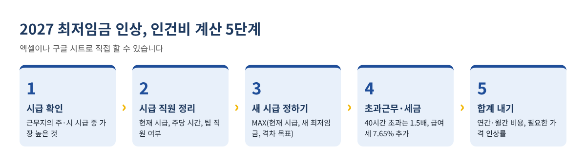
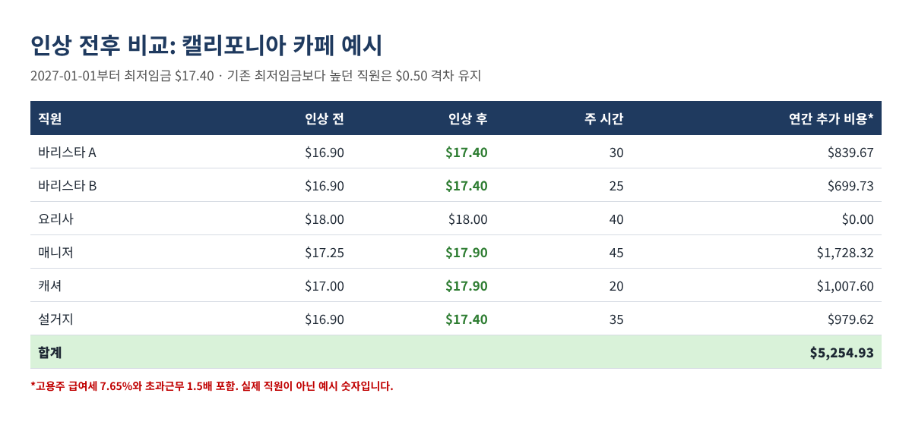
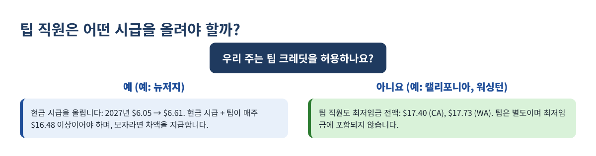
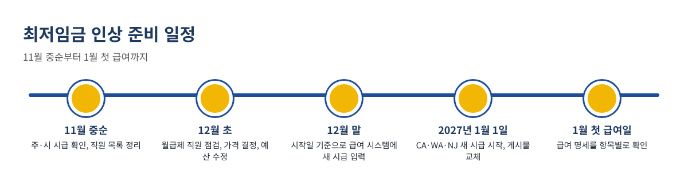

2027년 최저임금 인상, 우리 가게 인건비는 얼마나 늘까? 직접 계산하는 5단계
2027년 1월 1일부터 여러 주에서 최저임금이 또 오릅니다. 캘리포니아는 시간당 $17.40, 워싱턴은 $17.73, 뉴저지는 $16.48이 됩니다. 카페, 식당, 네일·미용실, 세탁소, 리커·마트처럼 시급 직원을 쓰는 가게라면 "새 시급이 얼마냐"보다 "내년 인건비가 얼마나 늘고, 가격을 올려야 하느냐"가 진짜 질문입니다.
대부분은 인상액에 40시간을 곱하고 끝냅니다. 그러면 초과근무, 늘어난 임금에 붙는 고용주 급여세, 팁 직원 규정, 새 면제 연봉 기준에 못 미치는 월급제 매니저, 그리고 신입과 시급이 거의 같아지는 경력 직원 문제를 놓치게 됩니다. 아래 방법대로 하면 엑셀이나 구글 시트로 30분 안에 직접 계산할 수 있습니다.
1단계: 근무지에 적용되는 시급 확인
적용 시급은 연방·주·시(카운티) 최저임금 중 가장 높은 것입니다. 연방 최저임금은 여전히 $7.25라서 대부분 주나 시 시급이 기준이 됩니다. 2026년 11월 15일 기준으로 공식 사이트에서 확인한 2027년 시급입니다.
| 지역 | 2027 시급 | 시작 | 팁 직원 |
|---|---|---|---|
| 연방 최저선 | $7.25 | 시행 중 | 현금 $2.13, 팁 크레딧 최대 $5.12 |
| 캘리포니아 | $17.40 | 2027-01-01 | 팁 크레딧 없음 |
| 워싱턴 | $17.73 | 2027-01-01 | 팁 크레딧 없음 |
| 뉴저지 (대부분 사업장) | $16.48 | 2027-01-01 | 현금 $6.61, 팁 크레딧 최대 $9.87 |
| 뉴저지 (직원 6명 미만·계절 사업장) | $16.25 | 2027-01-01 | 주 공고 확인 |
| 뉴욕: 뉴욕시·롱아일랜드·웨스트체스터 | $17.00 | 1월 1일 변동 없음 | 주 규정 확인 |
| 뉴욕: 그 외 지역 | $16.00 | 1월 1일 변동 없음 | 주 규정 확인 |
뉴욕은 올해 특별합니다. 주 정부는 2027년 1월 1일에 물가 연동 인상이 없다고 밝혔습니다. 주지사가 2027년 3월 1일부터 $17.60(뉴욕시·롱아일랜드·웨스트체스터) / $16.55(그 외)로 올리자고 제안했지만, 주 의회가 승인해야만 시행됩니다. 아직 확정이 아닙니다.
그다음 시 최저임금을 확인하세요. 워싱턴 노동청은 시애틀, 시택, 터퀼라 등 주보다 높은 시급을 정한 도시들을 따로 안내합니다. 시 시급이 더 높으면 그것을 씁니다.
2단계: 시급 직원 목록 만들기
직원 한 명당 한 줄로 시트를 만들고 네 칸을 채웁니다: 직책(SSN 등 개인정보는 필요 없음), 현재 시급, 평균 주당 근무시간, 팁 직원 여부(Y/N). 주당 시간은 최근 급여 기록의 평균을 쓰고, 초과근무가 있던 주도 포함합니다.

3단계: 직원별 새 시급 정하기
법으로 꼭 올려야 하는 사람은 새 최저임금보다 낮게 받는 직원뿐입니다. 하지만 바로 위에 있는 직원에 대한 기준도 필요합니다. $17.25 받던 매니저가 $17.40에 들어온 신입보다 오히려 적게 받으면 불만이 생깁니다. 그래서 기존 최저임금보다 높게 받던 직원은 새 최저임금보다 $0.50 정도 높게 맞춰 주는 사장님이 많습니다. 시트에서는 이렇게 씁니다.
- 격차 목표 (기존 최저임금보다 높던 직원만):
=IF(B2>기존최저, 새최저+격차, 0) - 새 시급:
=MAX(B2, 새최저, 격차목표) - 시간당 인상액:
=새시급-B2
B2는 현재 시급이고, 기존최저·새최저·격차는 값을 넣어 둔 칸을 가리킵니다.
4단계: 초과근무와 고용주 급여세 더하기
연방법상 한 주 40시간을 넘는 시간은 통상 시급의 1.5배를 줍니다. 그래서 $0.65 인상이면 초과근무 1시간마다 $0.975가 듭니다. 주당 시간을 "유급 환산 시간"으로 바꿉니다.
=MIN(C2,40)+1.5*MAX(C2-40,0) (C2 = 주당 시간. 45시간이면 47.5시간)
여기에 고용주 몫 급여세를 더합니다. IRS Publication 15(2026)에 따르면 고용주는 사회보장세 6.2%, 메디케어 1.45%, 합계 7.65%를 냅니다. 주 실업보험이나 산재 요율을 알면 함께 더하세요.
=인상액*환산시간*52*(1+7.65%) 가 그 직원의 연간 추가 비용입니다.
캘리포니아처럼 하루 단위 초과근무 규정이 있는 주도 있습니다. 하루 근무가 긴 직원이 있으면 그 시간도 반영하세요.
5단계: 합계를 내고 매출과 비교하기
연간 비용을 더하고, 12로 나누면 월 비용, 연 매출로 나누면 이를 메우는 가격 인상률이 나옵니다. 캘리포니아 카페 예시로 끝까지 계산해 보겠습니다.
| 직원 (예시) | 현재 | 주 시간 | 새 시급 | 환산 시간 | 연 추가 임금 | 세금 7.65% 포함 |
|---|---|---|---|---|---|---|
| 바리스타 A | $16.90 | 30 | $17.40 | 30.0 | $780.00 | $839.67 |
| 바리스타 B | $16.90 | 25 | $17.40 | 25.0 | $650.00 | $699.73 |
| 요리사 | $18.00 | 40 | $18.00 | 40.0 | $0.00 | $0.00 |
| 매니저 (시프트 리드) | $17.25 | 45 | $17.90 | 47.5 | $1,605.50 | $1,728.32 |
| 캐셔 | $17.00 | 20 | $17.90 | 20.0 | $936.00 | $1,007.60 |
| 설거지 | $16.90 | 35 | $17.40 | 35.0 | $910.00 | $979.62 |
| 합계 | $4,881.50 | $5,254.93 |
예시 값: 가상의 카페, 기존 최저임금 $16.90, 새 최저임금 $17.40, 격차 $0.50 정책.
이 카페의 인상 비용은 연 약 $5,255, 월 약 $438입니다. 연 매출이 $600,000이라면 가격을 약 0.88% 올리면 메워집니다($5,254.93 ÷ $600,000). 눈여겨볼 점은 최저임금 직원도 아니던 매니저가 격차 정책과 초과근무 때문에 가장 큰 비용을 차지한다는 것입니다.

놓치기 쉬운 경우
팁 직원
연방법은 팁을 한 달에 $30 넘게 꾸준히 받는 팁 직원에게 현금 시급 $2.13만 주고 최대 $5.12까지 팁을 최저임금에 포함(팁 크레딧)하는 것을 허용합니다. 주는 더 엄격할 수 있습니다. 뉴저지는 2027년 현금 시급 $6.61, 최대 팁 크레딧 $9.87로 합계 $16.48입니다. 캘리포니아와 워싱턴은 팁 크레딧이 아예 없어서 팁 직원도 팁과 별도로 최저임금 전액을 받아야 합니다. 하나 더: 연방 규정상 팁 직원의 초과근무 수당은 낮은 현금 시급이 아니라 최저임금 전액을 기준으로 계산합니다.

월급제 매니저 (면제 연봉 기준)
월급제 직원이 초과근무 수당 면제가 되려면 연봉이 일정 기준 이상이어야 합니다. 미 노동부는 현재 주 $684(연 $35,568)를 적용합니다. 여러 주는 최저임금에 연동된 더 높은 기준을 둡니다. 캘리포니아 2027년 기준은 $17.40 × 2 × 2,080시간 = $72,384, 워싱턴은 직원 51명 이상 $92,196, 50명 이하 $82,976.40입니다. 연봉 $70,000인 캘리포니아 매니저는 $2,384가 부족하니 연봉을 올리거나 초과근무 수당을 주는 시급제로 바꿔야 합니다.
1월 1일에 걸친 급여 기간
격주 급여 기간이 12월 25일~1월 7일이라면, 1월 1일 이후 근무한 시간은 새 시급으로 줘야 합니다. 급여 시스템에서 기간을 나눠 입력하세요.
연중에 시작하는 인상
시작일이 늦으면 연간 비용에 남은 기간 비율을 곱합니다. 2027년 3월 1일 시작이면 365일 중 306일, 83.8%입니다.
흔한 실수
- 시 최저임금이 더 높은데 주 시급으로 계산
- 40시간만 곱하고 초과근무를 빼먹음
- 늘어난 임금에 붙는 고용주 급여세 7.65%를 잊음
- 12월 말 근무분을 새 시급으로, 1월 근무분을 옛 시급으로 지급
- 월급제 매니저 연봉을 새 면제 기준보다 낮게 둠
- 뉴욕 3월 인상안 같은 "제안"을 확정된 법처럼 예산에 반영
- 최저임금 직원만 올려 경력 직원과 차이가 사라짐

자주 묻는 질문
이미 새 최저임금보다 많이 받는 직원도 올려야 하나요?
최저임금법상으로는 아닙니다. 새 최저임금 이상이면 됩니다. 격차 인상은 임금 역전을 막기 위한 경영 판단입니다.
고용주 급여세가 비용에 큰 차이를 만드나요?
사회보장세와 메디케어로 7.65%가 붙고, 주 실업보험·산재보험이 추가됩니다. 위 예시에서는 $373.43이 더해졌습니다.
우리 주가 표에 없으면 어떻게 하나요?
주 노동청 홈페이지에서 2027 최저임금 공고를 찾고, 시·카운티 시급도 확인하세요. 적용되는 것 중 가장 높은 시급을 씁니다.
캘리포니아에서 팁을 최저임금에 포함할 수 있나요?
아니요. 캘리포니아 노동청은 고용주가 팁을 최저임금 지급 의무에 대한 크레딧으로 쓸 수 없다고 안내합니다.
체크리스트
- ☐ 주·시 2027 시급을 공식 사이트에서 확인
- ☐ 시급 직원 전원의 시급·시간·팁 여부 정리
- ☐ 격차 정책 결정
- ☐ 초과근무와 급여세 7.65% 반영
- ☐ 월급제 매니저 면제 연봉 기준 확인
- ☐ 시작일 이후 근무분부터 급여 반영
- ☐ 가격과 2027 예산 검토
- ☐ 1월 첫 급여 확인
안내: 이 글은 교육용 정보이며 세무·법률·급여 자문이 아닙니다. 최저임금, 팁 크레딧, 면제 기준은 주·시·업종마다 다르고 자주 바뀝니다. 근무지 관할 기관에서 규정을 확인하시고, 개별 상황은 전문가와 상의하세요. 예시의 사업체와 숫자는 모두 가상입니다.
위 과정을 그대로 해 주는 2027 최저임금 인상 급여 계획표는 아래 무료 키트 다운로드에서 가입 없이 무료로 받으실 수 있습니다(엑셀 + PDF 가이드).
출처 (2026년 11월 15일 확인)
- 캘리포니아 DIR: 2027년 1월 1일 최저임금 $17.40
- 캘리포니아 DLSE: 최저임금 FAQ (팁과 최저임금)
- 워싱턴 L&I: 2027년 최저임금 $17.73
- 뉴저지 노동부: 2027년 최저임금
- 뉴욕주: 2027년 최저임금 안내
- 미 노동부 Fact Sheet #15: 팁 직원
- 미 노동부 Fact Sheet #23: 초과근무 수당 규정
- 미 노동부: 주별 팁 직원 최저임금
- 미 노동부: 면제 직원 급여 기준
- IRS Publication 15 (2026) 고용주 세금 안내
무료 키트 다운로드
글에서 설명한 내용을 그대로 따라 할 수 있는 도구입니다. 가입 없이 바로 받으세요.
- Excel 계산 도구 (.xlsx)Minimum_Wage_Raise_Planner_2027_EN_KR.xlsx · 27 KB
- 단계별 가이드 (PDF)Minimum_Wage_Raise_Guide_2027_EN_KR.pdf · 468 KB
본인과 본인 사업에 무료로 쓰세요. 재판매·재배포는 하지 마세요. 일반 정보이며 세무·법률·회계 자문이 아닙니다. 숫자는 본인 자료로 꼭 확인하세요.